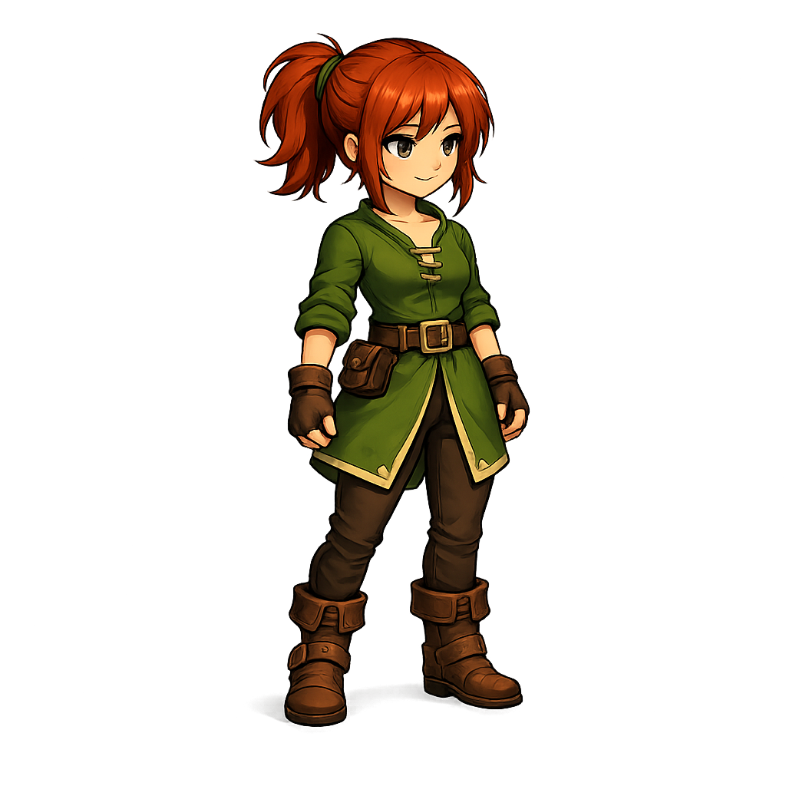

Lyria
Jovem viajante de cabelos ruivos e vestes verdes, Lyria cresceu acreditando que o mundo era muito maior do que os mapas mostravam. Sempre carregando uma pequena bolsa presa à cintura, onde guarda lembranças, ferramentas e objetos encontrados durante suas viagens, ela parte em busca de respostas sobre um lugar conhecido apenas em antigas histórias: a Biblioteca do Esquecimento.
Apesar de sua curiosidade quase inesgotável, Lyria evita confrontos desnecessários e prefere observar antes de agir. Conforme sua jornada avança, ela passa a perceber que as ruínas, criaturas e habitantes do reino parecem conhecê-la muito mais do que ela conhece a si mesma.